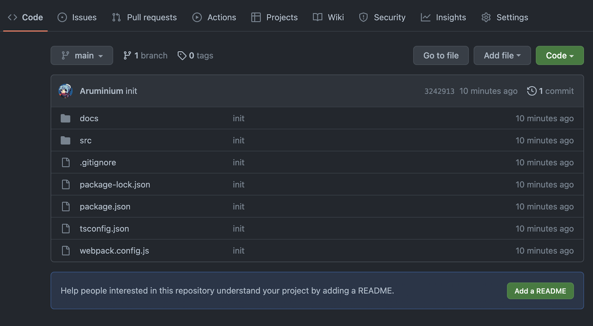
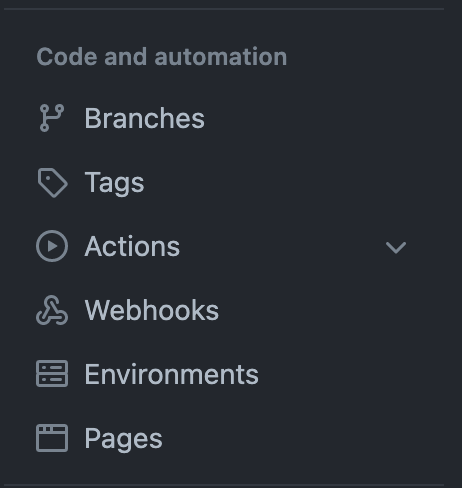
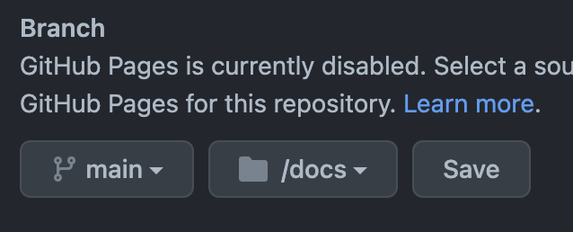
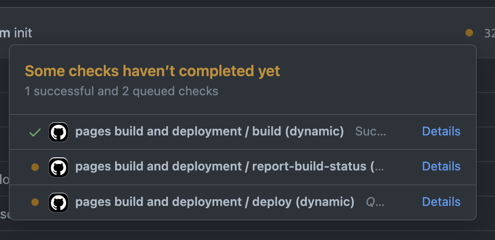
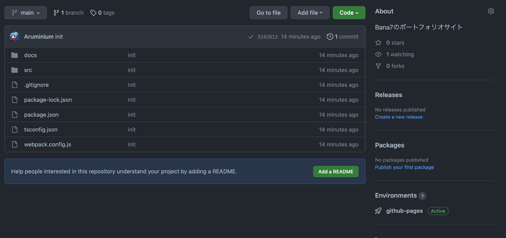
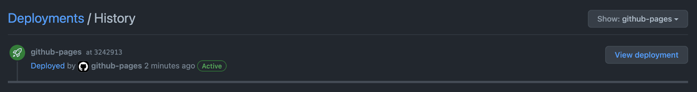

今回、最後は「ポートフォリオ」を扱う
ポートフォリオサイトを作成することは、就活はもちろん自分を紹介するサイトになる。
抽象的な説明が多くなるので、よく分からなくなったら無理して理解せずに、自分のペースで読んでいただきたい。
難しいので「何か色々設定してんな〜」程度で大丈夫です。プログラミングについてある程度理解し始めてきたら、またこの資料を参考にしてください。きっと役に立つはずです。
今回はnpxコマンドを用いずに環境構築を行う。
※npxコマンドで作られたReact環境では少し拡張性に欠けるため
VSCodeで開いてください。
npm initを入力すると色々聞かれるが、全てEnterを押して無視する。
$ git init
$ npm init
$ git remote add origin git@github.com:ユーザ名/portfolio.git
$ git branch -M main$ npm install react react-dom @types/react @types/react-dom
$ npm install --save-dev webpack webpack-cli webpack-dev-server babel-loader @babel/core @babel/preset-env @babel/preset-react typescript ts-loader sass css-loader style-loader sass-loaderTypeScrptとはJavaScriptの強化版のようなもの、詳細は調べてみよう
webpackは複数のファイルを1つにまとめて出力するツールのこと。詳細は調べよう
const path = require("path");
const loader = require("sass-loader");
module.exports = {
mode: "development",
entry: "./src/index.tsx",
output: {
path: path.join(__dirname, "docs"),
filename: "main.js",
},
module: {
rules: [
// TypeScriptのモジュール
{
test: /\.(ts|tsx)$/,
use: [
{
loader: "babel-loader",
options: { presets: ["@babel/preset-env", "@babel/react"] },
},
{
loader: "ts-loader",
options: {
configFile: path.resolve(__dirname, "tsconfig.json"),
},
},
],
},
// CSSのモジュール
{
test: /\.scss$/,
use: [
{
loader: "style-loader",
},
{
loader: "css-loader",
},
{
loader: "sass-loader",
},
],
},
],
},
devServer: {
static: {
directory: path.join(__dirname, "docs"),
},
port: 3000,
},
resolve: {
extensions: [".ts", ".tsx", ".js", ".json"],
},
target: "web",
};<!DOCTYPE html>
<html lang="ja">
<head>
<meta charset="UTF-8" />
<meta http-equiv="X-UA-Compatible" content="IE=edge" />
<meta name="viewport" content="width=device-width, initial-scale=1.0" />
<title>webpack × React × TypeScript</title>
</head>
<body>
<div id="root"></div>
<script defer src="main.js"></script>
</body>
</html>import React from 'react';
import ReactDOM from 'react-dom';
import Home from "./pages/Home";
ReactDOM.render(
<React.StrictMode>
<Home />
</React.StrictMode>
, document.getElementById('root')
);import React from "react";
const Home: React.FC = () => {
return (
<div>
<h1>Profile</h1>
</div>
);
};
export default Home;「Home: React.FC」のようにTypeScriptでは 変数名: 型名 と記述するのが特徴だ
{
"compilerOptions": {
"sourceMap": true,
"target": "ES2020",
"module": "ES2020",
"outDir": "docs",
"jsx": "react",
"moduleResolution": "Node",
"lib": ["ES2020", "DOM"],
"allowJs": true,
"allowSyntheticDefaultImports": true
},
"exclude": ["./node_modules"]
}
{
// ...
"scripts": {
// ...
"build": "webpack",
"dev": "webpack serve --open"
},
// ...
}$ npm run devlocalhost:3000にアクセス
これで最小限の設定で環境構築を完了した。
あとはReactで好きなように実装するのみ
Reactのフォルダ構成とかを学んで、UIフレームワークやFigmaを活用して実装しよう。
.gitignoreはgitにpushしたくないもののPathを書くことでpushされなくなる。
今回はnode_modulesはpushする必要がないので記述する(1行に1path)
node_modules今回の場合だと、buildするとSPSS2022/docs/main.jsに全ての情報が保存される。
つまり、変更してもbuildしないと反映されません。(docs/index.htmlでmain.jsを読み込む設定をしているので)
$ npm run build$ git add -A
$ git commit -m "init"
$ git push -u origin mainpushしたらリポジトリに移動しよう

「Setting」をクリック

「Pages」をクリック

このように設定して「Save」を押すとデプロイ完了

これがすべてチェックされるまで、待つ(リロード挟みながら)

「Environments」の「github-pages」をクリック

「View deployment」をクリックする
「ポートフォリオ」の説明より、Reactをデプロイする方法の方が正しいかもしれないがday6~day9までの内容を振り返ってポートフォリオを作成しよう
10日間お疲れ様でした。
SPSS2022は「1から教える」事が目的ではなく、「0から1を教える」を目的に、実際に実装しながらプログラミングを体験する勉強会です。
全体的に説明が乏しいのは事実ですが、少しでも参考になっていれば光栄に思います。
改めて、10日間お疲れ様でした。